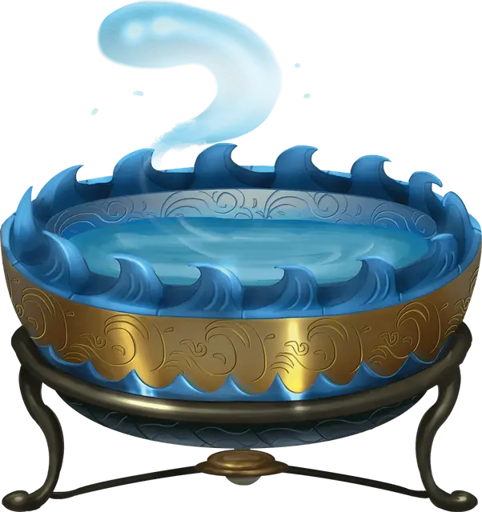

Чаша командования водяными элементалями
Bowl of Commanding Water Elementals
Чудесный предмет, редкий

Рекомендованная стоимость 501-5 000 зм
Если эта чаша наполнена водой, вы можете действием произнести командное слово и призвать водяного элементаля [water elemental], как если бы наложили заклинание призыв элементаля [conjure elemental]. Чашу нельзя использовать повторно, пока не наступит следующий рассвет. Чаша диаметром примерно 1 фут, а в высоту она в два раза меньше. Она весит 3 фунта и вмещает 3 галлона.